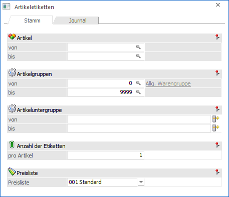
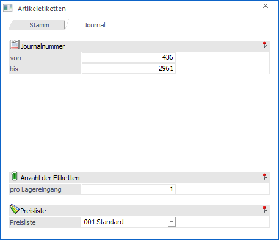

Im Menüpunkt…
1 WinLine FAKT
1 Auswertungen
1 Etiketten
1 Artikeletiketten
… können aufgrund von Artikel- und Lagerdaten Artikeletiketten erstellt werden (das Listbild der Etiketten kann im Formular-Editor individuell angepasst werden).
Register "Stamm"

In dem Register "Stamm" können Artikeletiketten aufgrund des Artikelstamms erzeugt werden. Für die Ausgabe von Artikeletiketten (basierend auf den Artikelstammdaten) können folgende Einschränkungen getroffen werden:
Ø Artikel von / bis
Hier kann die Ausgabe der Artikeletiketten auf bestimmte Artikel eingeschränkt werden. Bleiben diese beiden Eingabefelder leer, so werden von allen Artikeln die Etiketten ausgedruckt.
Hinweis
Wird im Feld "Artikel von / bis" z.B. nur eine Artikelnummer eingegeben und dieser Artikel hat auch noch Ausprägungen, so werden alle Ausprägungen automatisch mit angedruckt. Nur wenn während des Anklickens des "Ausgabe-Buttons" die STRG-Taste gedrückt wird, wird nur der Hauptartikel alleine ausgegeben.
Ø Artikelgruppe von / bis
In diesen Feldern kann nach den Artikelgruppen der Artikel eingeschränkt werden, welche bei dem Etikettendruck berücksichtigt werden sollen.
Ø Artikeluntergruppe von / bis
An dieser Stelle kann nach den Artikeluntergruppen eingeschränkt werden. Bleiben die Felder leer, so werden alle Artikel aller Artikeluntergruppen bei dem Etikettendruck berücksichtigt.
Ø Anzahl der Etiketten pro Artikel
Hier kann die Anzahl der Etiketten eingestellt werden, welche pro Artikel gedruckt werden sollen.
Ø Preisliste
Aus der Auswahlliste kann ausgewählt werden, aus welcher Preisliste der Preis angedruckt werden soll. Ist bei einem Artikel eine Preisliste durch Eingabe einer Mengenstaffel mehrmals hinterlegt, so wird immer der Verkaufspreis ohne Mengenstaffel verwendet. Bei Artikel die mehrere Aktionspreise hinterlegt haben, wird immer nur der Preis berücksichtigt, welcher am Tag des Ausdruckes aktuell ist.
Register "Journal"

In dem Register "Journal" können Artikeletiketten aufgrund des Artikeljournals, z.B. zur Auspreisung von eingegangenen Lieferungen, erzeugt werden. Hierbei kann die im Lagerzugang ausgewiesene Menge (Lagerbuchhaltung bzw. Belegerfassen) beim Druck der Artikeletiketten automatisch verarbeitet werden.
Für die Ausgabe von Artikeletiketten (basierend auf dem Artikeljournal) können folgende Einschränkungen getroffen werden:
Ø Journalnummer von / bis
Hier können Sie festlegen, welche Artikeljournalzeilen in den Ausdruck der Etiketten miteinbezogen werden sollen. Im Feld "von" wird automatisch immer die letzte Journalzeile vorgeschlagen, für die bereits Artikeletiketten ausgegeben wurden.
Ø Anzahl der Etiketten pro Lagereingang
Hier kann definiert werden, wie viele Etiketten pro Lagereingang ausgegeben werden sollen.
Beispiel
In der Journalzeile steht die Menge 5 und es sollen 2 Etiketten ausgegeben werden. Dieses würde bedeuten, dass insgesamt 10 Etiketten ausgegeben werden.
Ø Preisliste
Aus der Auswahlliste kann ausgewählt werden, aus welcher Preisliste der Preis angedruckt werden soll. Ist bei einem Artikel eine Preisliste durch Eingabe einer Mengenstaffel mehrmals hinterlegt, so wird immer der Verkaufspreis ohne Mengenstaffel verwendet. Bei Artikel die mehrere Aktionspreise hinterlegt haben, wird immer nur der Preis berücksichtigt, welcher am Tag des Ausdruckes aktuell ist.
Buttons

Ø Ausgabe Bildschirm
Mit Hilfe des Buttons "Ausgabe Bildschirm" oder der Taste F5 werden die Etiketten am Bildschirm ausgegeben.
Ø Ausgabe Drucker
Durch Anwahl des Buttons "Ausgabe Drucker" werden die Etiketten am Drucker ausgegeben.
Ø Ende
Durch Anwahl des Buttons "Ende" bzw. der Taste ESC wird das Fenster geschlossen.
Ø Filter bearbeiten
Durch Anklicken des Buttons "Filter bearbeiten" kann die Ausgabe nach frei definierbaren Kriterien eingeschränkt werden.